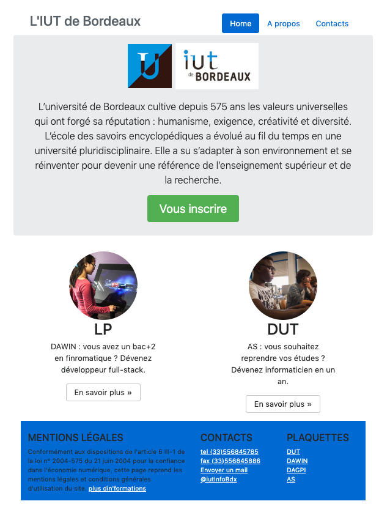

Séance 8 : Intégration
Compétences à acquérir lors de cette séance :
- Travailler sur un cas réel d'intégration.
Dans les grandes lignes, un projet web suit les étapes suivantes :
- Rédaction du cahier des charges
- Charte graphique - Web Design
- Mise en pré production : création technique du site et des fonctionnalités, intégration des graphiques et textes ...
- pré-optimisation SEO
- Formation à l’utilisation de l’administration ( cas d’un site dynamique ) et plus globalement transfert de compétence du prestataire au client
- Mise en ligne officielle du site internet
- Référencement
- Suivi, assistance
S'auto-évaluer : savez-vous créer une page web avec flex et/ou bootstrap ?
Réalisez l'intégration de la page ci-dessous.

Toutes les ressources nécessaire sont présentes sur le site du département
Pour réaliser ce site il va falloir lire un peu de documentation. Quelques liens intéressants pouvant vous aider à bien comprendre le code.
- la classe jumbotron
- Unités de mesure lien 1, lien 2
- la gestion des couleurs
- les boutons
- la gestion simplifiée des espacements
Pensez également à mesurer la qualité de votre site avec les validator du W3C et le module d'audit de votre navigateur.